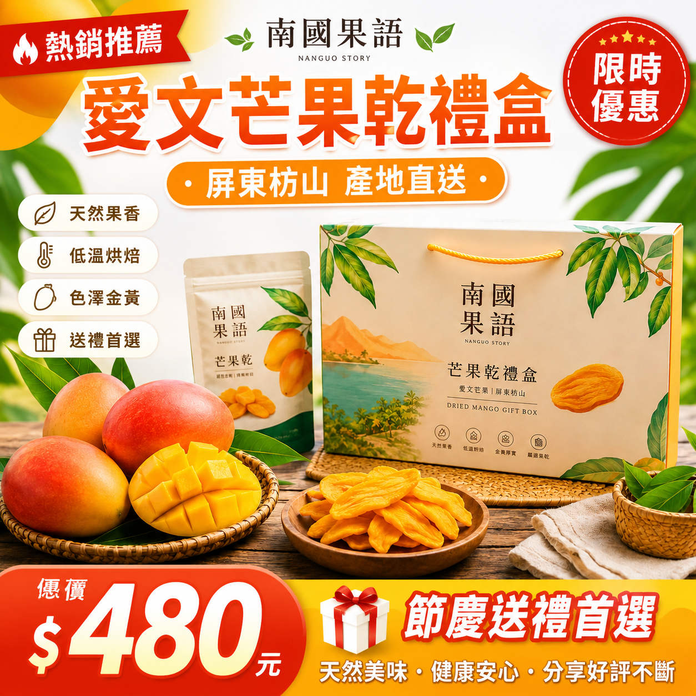
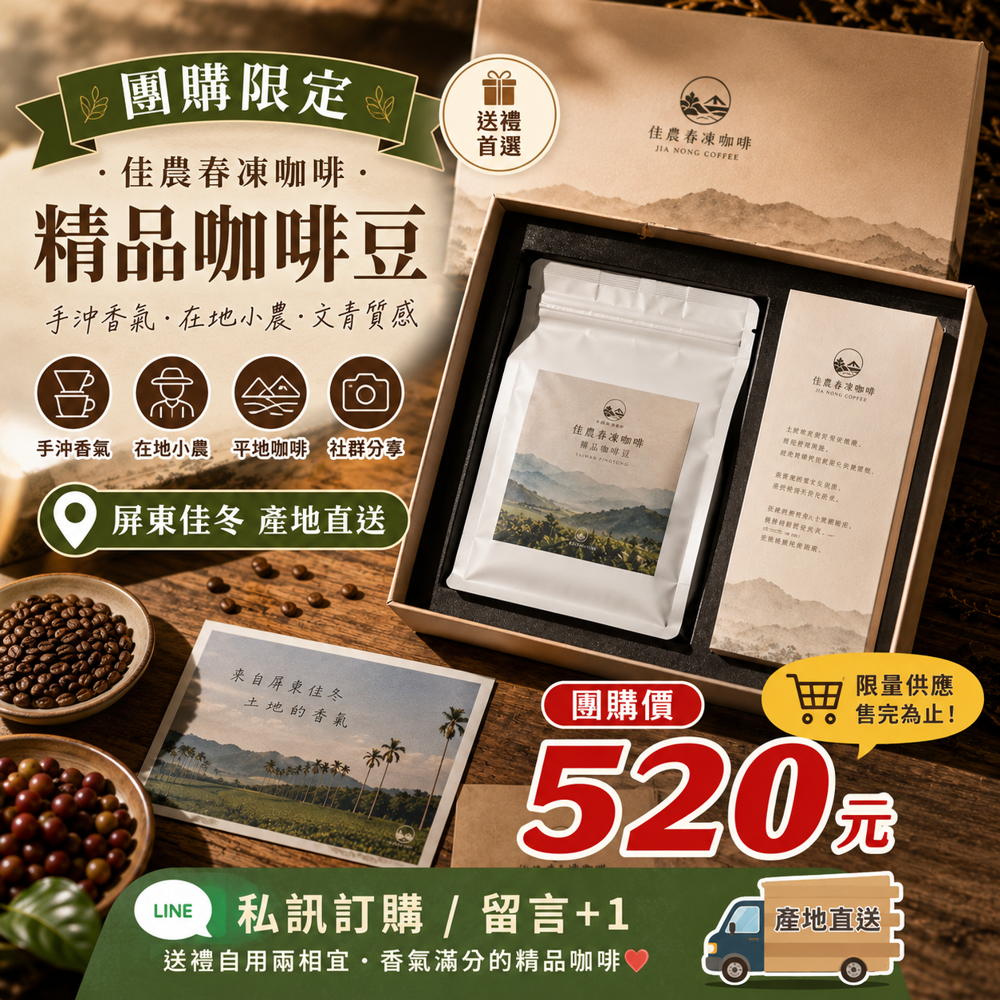

商品頁設計
規劃商品標題、賣點、內容區塊與購買理由。
- 商品標題
- 賣點排序
- 內容架構
- 購買理由
AI Agri E-commerce Manager
PRODUCT PAGE × COPYWRITING × CUSTOMER STRATEGY
從品牌名稱、產品特色、目標客群與售價出發，協助學生推演商品頁設計、 電商文案、促銷活動、顧客分析與轉換策略，建立完整農產品電商經營能力。
E-COMMERCE TOOLS
從商品頁到促銷企劃，讓學生理解農產品如何在線上被看見、被理解、被購買。
規劃商品標題、賣點、內容區塊與購買理由。
產生商品頁標語、短文案、長文案與導購文案。
設計節慶、團購、滿額、試吃與回購活動。
分析目標客群、購買動機、疑慮與溝通策略。
VISUAL LEARNING
讓學生用圖片邏輯理解：一個好的農產品商品頁，如何一步一步提高購買意願。
把花東縱谷的土地心意，裝進一份值得分享的米禮盒。
NT$399讓顧客第一眼知道商品是什麼、適不適合送禮。
清楚呈現品牌、產地與商品名稱。
把產品特色轉化成顧客容易理解的購買理由。
讓顧客完成下單行動，是商品頁轉換率的關鍵。
AI E-COMMERCE CASE STUDY
從 AI農產品攝影師 到 AI農產品電商經營師， 學習如何將商品照片轉換成各大電商平台廣告圖。



SCENARIO CARDS
先用案例理解電商邏輯，再讓學生修改客群、售價與促銷方式。
E-COMMERCE INPUT
輸入產品資料後，一鍵產生商品頁、文案、促銷與顧客分析。
AI SIMULATION LEARNING
把農產品特色轉換成消費者看得懂的商品價值。
理解標題、圖片、賣點與活動如何影響購買決策。
從一次成交走向回購、會員、口碑與品牌經營。